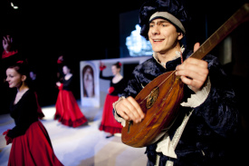

Juana poznala od osemnástky (sr.Mária Marthe)Sestra Mária Marthe má za sebou už niekoľko úspešných školských divadelných hier. Ale hra, ktorú priviedla na svetlo sveta tento raz a to, čo sa jej podarilo zo študentov vykresať, je neuveriteľné. Juan de Dios nechal stáť v úžase nejedného diváka. Pozrime sa na svet režisérky zbližšia. |
 Rád chodím bosý (Juraj Vontorčík)Mnohé médiá sa s ním pokúšali porozprávať. Mnohí novinári chceli nechať svoju prácu, lebo pochopili, že sa im to nikdy nepodarí. Mnohé denníky a magazíny mu denne volajú a prosia ho aspoň o krátke vyjadrenie. Nám sa to podarilo! My sme tí, ktorým sa podarilo získať rozhovor so samotným hlavným predstaviteľom Juana de Dios v hre s rovnomenným názvom, Jurajom Vontorčíkom. Predkladáme vám ho v nasledujúcich riadkoch. |
 Paradiso a ďalšie tajnosti zo sveta hudobníkov (sr.Yvonne, sr.Lýdia)Bez hudby by žiadna GCM hra nebola pravou hrou a bez sestier Yvonne a Lýdie z Rodiny Panny Márie by asi žiadna hudba nebola. Tieto rehoľné sestry, a skvelé hudobníčky, majú najväčší podiel na piesňach, ktoré prispeli k silnému umeleckému zážitku všetkých divákov. Určite si viacerí z nás jednotlivé melódie pospevujú dodnes. |
 Bol to fiškus (David Sedmák)David Sedmák bol donedávna iba obyčajným školákom, dnes je už vďaka svojmu talentu ostrieľaným hercom, ktorý sa nezľakne plného hľadiska. Nerobí mu problém odpadnúť na javisku, tešiť sa i plakať pred pohľadmi divákov. |
 Hrám celý život (Juraj Daniš)Desivý výkrik do tmy. Diváci v prvých radoch sú v šoku. Všetkým naskakujú zimomriavky. Juro Daniš neuveriteľne realisticky stvárnil vnútorný boj človeka, ktorý v živote sv. Jána z Boha spôsobil nemalý chaos. Preto sme sa s týmto, možno raz profesionálnym hercom porozprávali. |
 Neskúšajte si líhať do truhly! (Fefe Križanová)Dôležitú úlohu v živote sv. Jána z Boha si zahrala Františka Križanová, ktorá nazbierala veľa hereckých skúseností a zožala nejeden aplauz práve na GCM-áckych divadelných doskách. |
 Už nepoznám len prímu (Katka Petrovičová)Jednou z najmladších medzi hercami bola Katka Petrovičová, predstaviteľka malej Beatriz, ktorá úspešne kráča v hereckých šľapajách svojich starších bratov. |
 Milujte profesorov! (Andrej Karlubík)Odchovanec GCM Andrej Karlubík alias Filip Jakubík má oko na originálne zábery, ruku na presný strih,cit na zachytenie atmosféry, nadšenie pre divadelné hry a pri svojej výške 189 cm schopnosť byť s kamerou v ruke nenápadným v priestore. Už niekoľko rokov je neoddeliteľnou súčasťou divadelného tímu GCM. Vďaka nemu sa naše hry, zachytené na filmovom plátne, dostali nielen do Košíc či Prahy, ale i za veľkú mláku, ba dokonca do Austrálie. |
Ešteže mi briadka nezhorela... (Ondrej Antl)Určite ho všetci poznáte. Dlhé vlasy a briadka. Vyžíva sa v šerme a lezení. Je to totálny „salámista“ reč je o Ondrejovi Antlovi, ktorý v hre stvárnil niekoľko úloh. Mohli ste ho vidieť ako šermiara v scéne Vojna, ale hlavne ako tanečníka v tancoch Dedina, Blázni a Oheň. |
 Čakáme telefonát (Beba Beľovičová, Ľuboš Topor)Tance z hry Juan de Dios boli také úžasné, že málokto dokázal nájsť v tanečníkoch „obyčajných“ študentov. Bebe Belovičovej a Ľubošovi Toporovi sa podaril kus obdivuhodnej práce. |
Gitara je moja láska (Adam Predáč)Trubadúr v modrom kostýme rozprávajúci príbeh o Juanovi de Dios je síce postava bez vlastného príbehu, ale pre diváka veľmi dôležitá. Na rozhovor sme pozvali Adama Predáča, herca a speváka v jednej osobe. |
Tancuj, tancuj, vykrúcaj... (tanečníci )Neodmysliteľnou súčasťou divadelných hier z produkcie GCM sú tance. Z roka na rok, od hry k hre sú náročnejšie, ale zato krajšie a profesionálnejšie. Ako sme mohli zistiť, medzi tanečníkmi je veselo. A dostať od nich serióznu odpoveď, nebolo vôbec ľahké. |
Desať riadkov na rybárskej sieti nie je hračka ( kostymérky)Nebolo ich vidieť ani počuť , ale keby sa rozhodli štrajkovať, divadlo zostane bez podstatnej časti. Predstavujeme vám slečny z kostymérskej dielne! |
Je to vlastne chúďatko ... (Naďa Kraimerová)Milovať a nebyť milovaný ? Každý si vie predstaviť, že je to ťažký osud. Aj v blízkosti sv. Juana de Dios žila osôbka, ktorej láska nebola opätovaná. Na Beatriz sme sa spýtali jej divadelnej predstaviteľky Nadi Krajmerovej: |